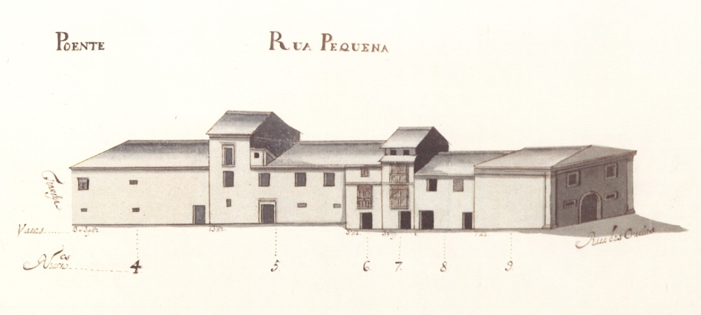

Legenda: RuaPequena - vista nascente.
Legenda: RuaPequena - vista poente.
Como o nome diz é uma pequenina rua que ligava a rua das Oucias com a travessa da rua do Forno para a do Poço.
Respeitando o reticulado romano era mais uma das artérias do bairro medieval adjacente à catedral.
Na Idade Média era já pequena e permitia um melhor acesso ao mercado da olaria, então existente junto ao transepto da Sé. Por isso recebeu esse nome.
No séc. XVI, o célebre humanista Diogo Teive emprazou ao Cabido a casa n.º 2, passando a ser conhecida por rua do Teive. Até que por volta de 1620 Mateus Fernando Farto, talvez senhor de forte importância política ou económica, veio para aqui viver, tanto bastando para ser conhecida pelo seu apelido.
No Mappa, contudo, aparece como rua Pequena. Sabemos ainda que talvez a partir do fim da Idade Média, e durante cerca de um século, também foi chamada de rua Painsalvos, por nela ter morado o abade da freguesia transmontana do mesmo nome.
Embora pequena, tem 3 edifícios notáveis: o prazo n.º 1, grande construção em pedra, com fachada bem organizada e um recuado em toda a extensão; o prazo n.º 2, casa com quase excesso de aberturas, (sem comparação com qualquer outra em todo o Mappa); e o prazo n.º 5, construção também em pedra, de 2 pisos, com mais um piso, no seu último vão Sul, quase semelhando uma torre.
Das 4 casas existentes quer no lado Nascente, quer no Poente, 3 e 4, respectivamente, são prazos do Cabido.
Enfiteuta: None
Foro: None
Descrição:
Enfiteuta: Francisco de Sousa Castro
Foro: 875 reis e 2 galinhas
Descrição:
Enfiteuta: D. Filipa Maria de Melo
Foro: 240 reis
Descrição:
Enfiteuta: None
Foro: None
Descrição:
Enfiteuta: Miguel Teodósio Fiuza de Sottomayor. viúvo de Amarante
Foro: 320 reis e 1 capão
Descrição: None
Enfiteuta: Lic. Paulo de Sousa de Magalhães
Foro: 220 reis e 2 capões
Descrição:
Enfiteuta: Lic. Paulo de Sousa de Magalhães
Foro: 220 reis e 2 capões
Descrição:
Enfiteuta: Francisca Teresa Petiz
Foro: 70 reis e 1 galinha
Descrição:
Enfiteuta: None
Foro: None
Descrição: